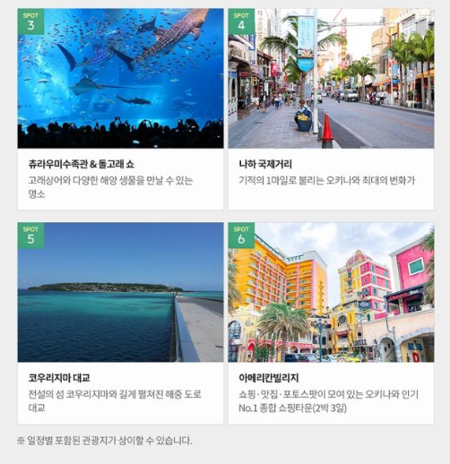
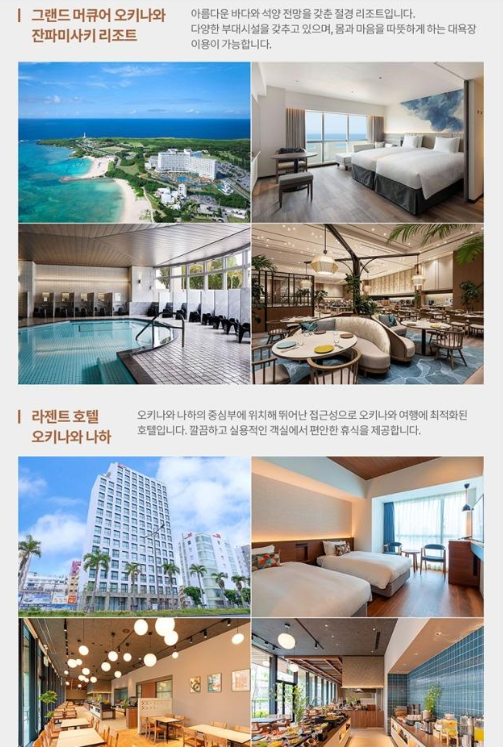

1. 오키나와 패키지 3박4일의 전체 구성
이번 오키나와 패키지 3박4일은 대표 관광지 방문과 리조트 숙박, 자유일정을 함께 구성한 점이 특징입니다. 오키나와는 일본 본토와는 다른 남국 분위기와 해안 풍경을 즐길 수 있어 휴양과 관광을 함께 원하는 여행객이 많이 찾는 지역입니다. 패키지 여행에서는 이동수단과 주요 관광지 방문이 포함되어 있어 렌터카 운전이나 복잡한 대중교통 이동이 부담스러운 분들에게 편리할 수 있습니다. 여기에 하루 자유일정까지 포함되어 있다면 패키지 특유의 정해진 일정과 개인 취향에 맞는 자유시간을 적절히 나눌 수 있다는 장점이 있습니다.
2. 그랜드 머큐어 잔파 리조트와 숙박 조건
상품명에는 그랜드 머큐어 잔파 숙박이 안내되어 있습니다. 오키나와 여행에서는 숙소의 위치와 리조트 시설, 해변 접근성, 조식과 부대시설 여부가 여행 만족도에 큰 영향을 주는 경우가 많습니다. 특히 일정 중 자유시간이 포함되어 있다면 숙소 주변에서 시간을 보내는 비중이 커질 수 있으므로 호텔 시설과 주변 환경도 함께 살펴보는 것이 좋습니다. 실제 객실 타입, 바다 전망 여부, 조식 및 석식 포함 여부, 체크인·체크아웃 시간 등은 출발일별 상품 조건에 따라 달라질 수 있으므로 예약 전 상세페이지에서 다시 확인하세요.

3. 디너뷔페와 노미호다이 구성
상품명에는 디너뷔페와 노미호다이가 포함된 것으로 안내되어 있습니다. 일본 여행에서 노미호다이는 정해진 시간 동안 주류나 음료를 자유롭게 이용할 수 있는 형태를 의미하는 경우가 많지만, 실제 제공되는 음료 종류와 이용시간은 상품이나 현지 식당에 따라 다를 수 있습니다. 따라서 어떤 식사가 포함되어 있는지, 뷔페 이용시간은 얼마나 되는지, 주류 제공 범위와 추가요금 여부 등을 미리 확인하면 좋습니다. 패키지 여행은 식사 구성이 가격 차이에 영향을 주는 경우가 많기 때문에 단순히 총액만 비교하기보다 포함 식사 내용을 함께 보는 것이 중요합니다.

4. 츄라우미 수족관과 1일 자유일정
츄라우미 수족관은 오키나와에서 가장 대표적인 관광지 중 하나로, 가족 여행이나 첫 방문객이 특히 많이 찾는 장소입니다. 상품명에 츄라우미 일정이 포함되어 있으므로 입장권 포함 여부, 관람시간, 이동시간 등을 확인해보는 것이 좋습니다. 또한 1일 자유일정이 포함되어 있다면 국제거리 쇼핑, 카페 방문, 해변 산책, 개인 선택관광 등 자신이 원하는 방식으로 시간을 보낼 수 있습니다. 자유일정 날에는 별도 교통편이 제공되는지, 숙소 위치에서 시내 이동이 편리한지 등을 미리 확인하면 여행 동선을 짜기 훨씬 수월합니다.
5. 마감임박·긴급모객 문구보다 중요한 예약 조건
상품명에 긴급모객이나 마감임박 같은 문구가 표시되어 있더라도 실제 예약 가능 좌석과 가격은 실시간으로 변동될 수 있습니다. 따라서 이런 문구 자체만 보고 서두르기보다는 출발 확정 여부, 항공편, 호텔, 포함 일정, 자유일정 범위, 가이드 경비, 선택관광, 쇼핑 일정, 취소·환불 규정을 함께 확인하는 것이 좋습니다. 특히 오키나와는 태풍 등 기상 영향을 받을 수 있는 지역이므로 여행 시기와 기상 상황, 일정 변경 규정도 체크해두면 도움이 됩니다.
오키나와 패키지 3박4일 상품 확인하기
실제 출발일, 최신 가격, 항공편, 호텔, 포함·불포함 조건과 취소 규정은 판매 페이지에서 최종 확인하세요.
여행 상품 자세히 보기 →오키나와 패키지 3박4일 FAQ
오키나와 패키지 3박4일에 자유일정이 있나요?
상품명 기준 1일 자유일정이 포함된 것으로 안내되어 있습니다.
츄라우미 수족관도 방문하나요?
상품명에 츄라우미 일정이 포함되어 있습니다. 실제 관람시간과 입장 조건은 상세 일정에서 확인하세요.
어떤 호텔을 이용하나요?
상품명에는 그랜드 머큐어 잔파가 안내되어 있습니다. 실제 배정 객실과 숙박 조건은 예약 페이지에서 확인하세요.
디너뷔페가 포함되나요?
상품명 기준 디너뷔페가 포함된 것으로 표시되어 있습니다.
노미호다이는 어떤 뜻인가요?
일반적으로 일정 시간 동안 음료나 주류를 자유롭게 이용하는 형태를 뜻합니다. 실제 제공 범위는 상품 상세조건을 확인하세요.